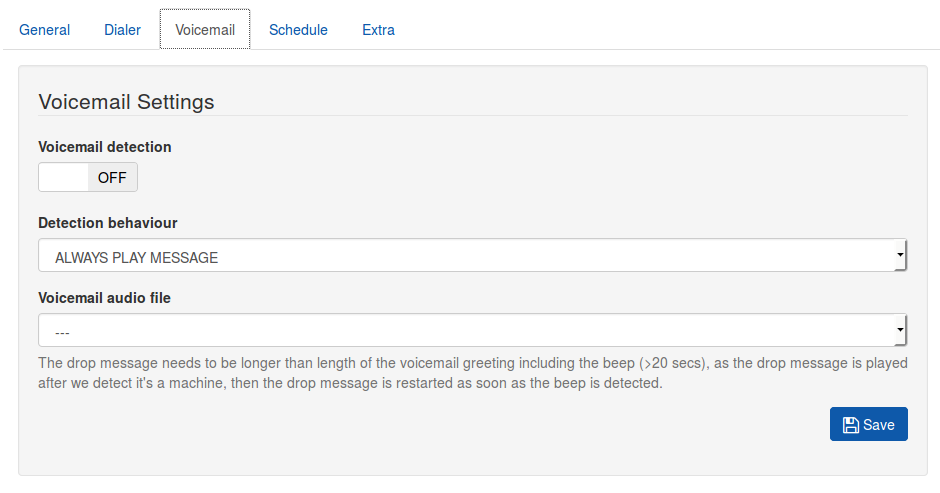
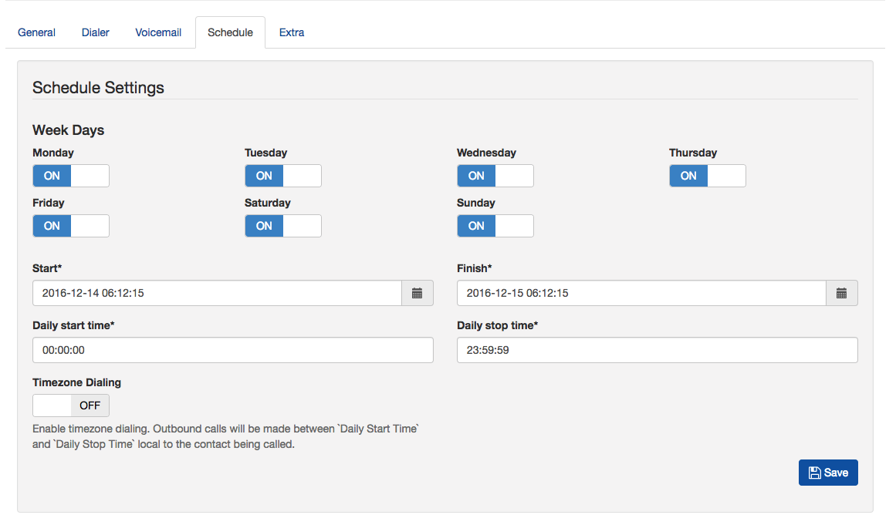
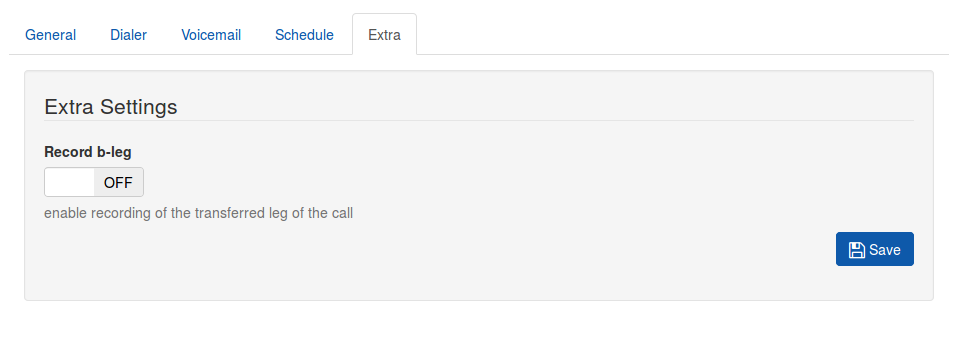
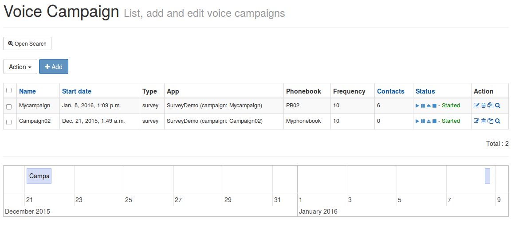

Voice Campaign¶
The campaign list will be displayed from the following URL. You can add a new campaign for
the logged in user by clicking Add campaign. When adding a campaign, it is important
to add the campaign’s start and end dates with time & week-day exceptions. Select
the gateway through which calls will be routed & phonebook(s) that are
linked with contacts from the campaign list, click on campaign to update.
URL:

To Add/Update a Campaign for a logged in user
URL:

Add New Campaign¶
The Add New Campaign tab has a number of fields to fill in:
- Caller ID Number - the number to deliver to the called party
- Caller Name - Optional, not supported by many carriers, delivers the caller ID name
- Application - the survey to send to the customer
- Extra Parameters - Usually not required.
- DNC - The Do Not Disturb list where numbers are added to, and numbers checked before calling.
- Phonebook - One or more phonebooks to be called.
- Description - Free text to put notes against the campaign.
- NB: The caller ID number can be set to a random value by putting in XXXXXXXXXX, which will give 10 digit random numbers. 800XXXXXXX will set the caller ID to 800 followed by 7 random numbers.
- Alternatively, up to 10 caller ID can be entered separated by a semi-colon; a caller ID will be chosen at random from the 10 caller ID. The caller ID can be changed mid campaign without stopping or pausing it.

Dialer Tab¶
The dialer section controls the call in progress:
- A-Leg Gateway - the gateway to use.
- Frequency - Calls dispatched per minute, this can be varied without stopping the campaign.
- Max Call duration - Make sure this is long enough to include the B-Leg where applicable.
- Max retries - Try again if the call has failed (unobtainbable / congestion / No answer )
- Time between retries - How long to wait before calling again.
- Timeout on Dialling - how long to ring for before giving up (minimum 15 seconds)
- Dialer completion retries - where the contact has not completed the survey, they can be called back. This is controlled by the Conpleted setting in the survey node.
Voicemail Settings¶
If AMD is not installed, you will not see this tab.
There are three options.
- Always play message - play the message to a contact, or if a machine, play the voice file selected in the voicemail audio file. The Audio file should be longer than the welcome message on an answering machine, for instance about 20+ seconds.
- Play message to human only - Hangup when machine is detected.
- Leave message to voicemail only - Hangup if person is detected, if machine, play the voicemail audio file. Note that this message should be longer than the voicemail greeting message (20+ secs)
Schedule¶
Decide which time of day to start and stop the campaigns, as well as which days they are active. By default, the campaign is set to start at the time of creation and finish 24 hours later.
It is good practice to set the days and times that a campaign should be active to ensure that calls are not made out of hours.
USA based systems can be configured to respect timezones. Set a Daily Start Time and a Daily Stop Time and set the Timezone Dialling Switch to On to make calls according to an individual contact’s own timezone.
The date and time for campaign Start and Finish is in local time. The calls will only be made between these dates and times irrespective of the timezone of your contacts.
Note that retries do not respect the stop time, so sufficient time must be given for these to complete before the campaign stops.
Extra¶
The only setting here for the moment is to opt to record the B-Leg, that is to say the call with the agent.
List Campaigns¶
When a campaign is first created, the “Type” will show Survey Template, and the number of contacts will be 0. When the play button is pressed, the the “Type” will change to Survey and the number of contacts will be displayed.
During the campaign, the speed of the campaign can be varied without having to stop the campaign.
When the campaign is started, a snapshot is taken of the survey at that time, so if there is a mistake in the survey, and you edit it, a new campaign will have to be created ton include your edit.
There is also the option to copy a campaign. When a campaign is copied, it will use the snpashot described in the previous paragraph, so if you edit the a survey, then copy an existing campaign, the survey edits will not be included.
In brief, if you edit a survey, make a new campaign.
While the survey is in a state of “Started” then new contacts can be added to the phonebook and they will be called. This will not occur if the campaign is stopped, even if the campaign is later restarted.

{kind=link}
{kind=link}
{kind=link}
{kind=link}